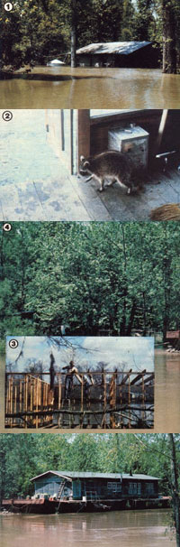
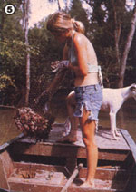
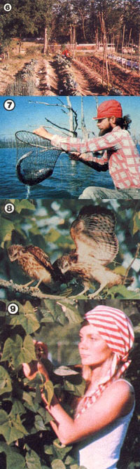

Report From Them That's Doin'
Raccoon feet tickety-tacked out of the back room as Calvin and I entered through the hole where the front door used to be. The guilty flick of a retreating snake's tail seemed to say, "Pardon me . . . I didn't think you'd be coming back," as it slipped down a crack in the six-inch layer of dried gunk covering the kitchen floor. By July the weight of that mud had broken the boards and pulled them away from the walls, finishing the demolition job started by the flood waters of February. As depressing as my last view of our home had been-with its roof poking bravely above the brown swirl of overflow from the Atchafalaya Riverit couldn't compare with the desolation I saw upon coming back to view the aftermath.
The high water shouldn't have been unexpected. Our now ruined house had been nestled deep in the Atchafalaya River Basin: 1.5 million acres of wilderness which, shortly after the devastating flood of 1927 terrorized settlements along the Mississippi River, had been designated an Army Corps of Engineers floodway. By the early 1930's floodgates were in place at the junction of the Mississippi and Atchafalaya Rivers above Simmsport, Louisiana, and retaining levees stretched along each side of the Atchafalaya to its mouth in the Gulf of Mexico. From that time on, the dangerous bulk of the Mississippi's spring rise could be diverted away from the cities by pouring it into this spillway.
BORN ON THE BAYOU
A land of fertile abundance, but cut off from the rest of the world by the river and its bayous, the Atchafalaya Swamp was too wild and forbidding for human habitation by any but the few people who loved it for its very isolation. For such individuals, the rich soil, plentiful fish and game, abundance of fur bearers, readily available cypress timber, and ever-present black moss were actually secondary in importance to the precious solitude.
My ancestors were among that group of ornery and independent swampers who left the confines of civilization to build their own schools, churches, stores, houses, and even a post office in the dense, green swamp. By the time the Army Corps of Engineers began its epic earth-moving, channel-changing project, that community-named Bayou Chene-was 150 years old . . . and right smack in the middle of the proposed spillway.
Even so, the idea of living "outside" was so distasteful to the swampers that most of them tried to stay on. When the floodgates were completed and put in use, the people of Bayou Chene modified their lifestyles to battle the water. They raised the floors in their houses, for example, and used large wooden rafts to stable their cattle until the high spring waters receded.
Eventually, though, the futility of this annual war against the floods was recognized by these stubborn-but not stupid-souls . . . and that acknowledgement just happened to coincide with the invention of the outboard motor. Equipped with a boat and one of the portable powerplants, a swamper could establish his or her family and livestock in settlements outside the levees, yet travel into the swamp to continue making a traditional living by fishing, frogging, moss picking, trapping, and so on.
Within the following 20 years, all signs of the old community disappeared as buildings were torn down and rebuilt outside the floodway. Only temporary shelters made of cardboard, scrap tin, and used plywood remained within the swamp, maintained by fisherfolk for emergency overnight stays.
That sort of compromise lifestyle, however, never appealed to my cousin Calvin. Even as a child, he dreamed of returning to the swamp for good . . . he longed to live and work among the silver cypress and whispering cottonwoods. So, since he couldn't remember a spring flood that came high enough to cover the bank, Calvin invested in moving his parents' vacant house back out to the old family homesite in the swamp. Then, in June 1972, when I was looking for an unusual summer job before commencing Ph.D. work in September, he took me on as a fishing partner. By the time autumn rolled around, there wasn't a graduate program in the world that could have enticed me away from that wilderness home!
We drifted through the year in a daze of enthusiasm. We painted, patched, and hung curtains in the old house. Vegetables and roses fairly sprang out of the black earth, encouraging us to put in an herb garden and a small orchard. The fish and game that had attracted the first swampers were still plentiful. We even got to the point of wondering how those old-timers ever could have left this paradise for their stark, unlovely settlements perched along the levees . . . until the flood of 1973 answered that question with a vengeance!
NOTHING TO LOSE
As I toured our water-wrecked home and contemplated the dreary prospect of my return to a city apartment and the academic world, I idly pried the relics of our life in the swamp from the mud with my toe: a jar of preserved pumpkin, winking in the July sun like hot coals . . . my grandmother's ceramic soap dish, half-buried but unbroken . . . an aluminum muffin pan filled with 12 perfect mud cupcakes. Each of the buried treasures seemed to chastise me for the return to the land of panty hose and polyester that I'd come to think of as inevitable . . . since even if the old house could be repaired this time, it might be washed away again any year the Mississippi flood waters were diverted into the Atchafalaya Swamp. I realized then with what heartbreak my ancestors had given up their battle.
At that point, Calvin broke into my thoughts as if he'd been eavesdropping. "Instead of fighting the water, let's try to cooperate with it. What do you think about houseboats?"
"Not much," I returned, picturing the tiny, dark one-roomers-usually equipped with a single cot and a Coleman stove-used by many hunters and fisherfolk in southern Louisiana. Floating on empty oil drums or rickety homemade pontoons, they serve well enough for a weekend shelter but wouldn't inspire homing instincts in a pigeon. Undaunted by my lack of enthusiasm, Calvin charged ahead. "I mean a big house, built on one of the steel barges that the riverboats push . . . a full-sized home with a brick fireplace and lots of windows. It would let us simply rise and fall with the water level all year."
Well, since we had nothing, we had nothing to lose. Even our lack of immediately available money to buy a barge wasn't a drawback, because we weren't likely to find one for sale in a hurry anyway. Nevertheless, the word was put out-to old friends, casual acquaintances, checkout clerks, and complete strangers-that we were in the market for a barge . . . and that bit of information was met with incredulity and guffaws, which no doubt helped to spread the news even further. ("Have you heard about Calvin and Gwen's harebrained scheme... ?") And while we were confounding friends with our daydream, we also mentioned that we were looking for a traditional Louisiana cypress house to recycle.
Having "placed our order", then, we separated . . . to earn money in whatever ways we could. I worked at assorted jobs on the East Coast, while Calvin saw the country with a surveying team.
THE PRICE IS RIGHT
More than a year later, on Christmas Eve in 1974, I was at work on a riverboat when Calvin sent word that an available barge had been located in Houma, Louisiana . . . a coastal town rich in marine equipment. The 26' X 103' monster was made of heavy riveted steel, but at 50 years old it was considered a commercial insurance risk and put up for sale as scrap metal. And if ever there was an omen that our dreams were in the right place, it was the price . . . a scant $950!
Then, immediately after the barge arrived at our building site on the Intracoastal Canal near the Bayou Sorrel Bridge, we heard that a nearby sugar plantation was selling of the houses that had been homes to generations of cane-field workers. Another $450 netted us a dwelling's worth of century-old cypress boards . . . some as long as 35 feet and others over two feet wide! The bargain also included three brick fireplaces, tongue-and-groove flooring, roofing tin, silvery aged clapboarding, lots of solid wooden doors, a massive fourposter bed, a bentwood chair, and an antique bureau!
As we pulled nails and sorted materials, we paid close attention to how the old cypress house had been put together. We figured the fact that neither of us had built so much as a doghouse was no reason to shrink from constructing a big home full of windows and a brick fireplace! So-armed with a box of crayons, paper, and Brad Angier's How to Build Your Home in the Woods (Sheridan, 1952, $9.95)-we started drawing up our plans.
The shape of our barge naturally dictated a shotgun style of architecture, rather than a four-square model . . . the Louisiana climate demanded a big screened porch and as many windows as the walls could support . . . and our own tastes leaned toward a home with a few large rooms rather than many small ones. The rest of the design was pretty much determined by the availability of materials. For example, we were one room shy of wooden flooring . . . but the fireplace hadn't made a dent in our mountain of bricks, so we decided to use the surplus to build the floor in the library (it certainly eliminated the danger of fire from stray sparks). The bricks help store heat from the fireplace in the winter . . . and provide the room with a cool, inviting summer atmosphere.
BUILDING ON A BARGE
The construction of our home started on January 22, 1975 under the watchful and pessimistic eye of an old loiterer who kept mumbling, "It'll never stand." That gentleman, however, was one of the many people who'd scoffed at the thought of our even finding a barge in the first place, so we didn't pay him much mind.
For a while, though, it did seem that his prediction might well prove true. Each morning, we'd peer out of our temporary shelter on the bank (it had housed Calvin's horse until we moved the animal out and ourselves in) to see our stud poles listing north or south, depending on which direction the largest wake-producing towboats had taken in the night. It became a prebreakfast ritual to hoist the studs back to perpendicular with a rope while we braced and braced and braced some more. Before long, Calvin tossed the carpenter's level to our bored spaniel, and from then on we just guessed at the constantly changing angles.
Since our every available penny was being spent on nails, sandpaper, window glass, and other building incidentals, we stayed alive by means of fish caught on crosslines near the barge. Our surplus was traded to riverboat folks for milk, eggs, meat, vegetables, gas, paint, cleaning supplies, and anything else that would have taken our time to grow,or our money to buy.
Finally, on July 22-six months to the day from the time we started to build-the last piece of crooked molding (there's not a 90° angle in the entire house) was nailed into place, and we returned the hammer, handsaw, and ladder we'd borrowed in January. From top to bottom, we'd spent less than $2,500 for our floating home.
We'd actually been living on the barge since the completion of the kitchen in April, but suddenly we felt as if we'd never seen it before! Like strangers, we drifted through the screened porch, the kitchen, the library, the bedroom, and the tiny blue-sky-and-white-cloud-painted bathroom. (The empty nest syndrome isn't reserved for mothers. I've seen these same blues follow the completion of any long-term project, whether it's a stage play, a dissertation, or the building of a home.) With no house to work on, we momentarily wondered what we were going to do with the rest of our lives!
COMING HOME
Our restlessness lasted only until we made arrangements for towing to the swamp. Once we actually tied our home in place in the sleepy summer waters of our new address, we were faced with all the expected life-in-the-wilderness chores, as well as the added challenge of cooperating with our environment.
Even after years of houseboat living (several of which brought floods), we're still learning new ways to work with the high water. In choosing vegetables, for example, we must give priority to lateseason varieties, since a swollen Mississippi could cause our fields to flood and delay the planting dates. (Early tomatoes and peppers, along with cooking herbs, are container-grown on the barge.) Our chicken population is limited to the number that can be conveniently accommodated by a floating coop when the henhouse goes under. And since a permanent fence would rust, be torn loose, or get buried in silt every flood year, the chicken and garden enclosures are made up of wire-covered frame sections that can be taken down and stacked, then reassembled in minutes with a pair of pliers.
Once he'd observed that wild swamp lilies can survive floods, Calvin abandoned his beloved roses for tame lilies, which are just as varied and beautiful but can stay submerged for weeks and still come up smiling. A 500-gallon rainwater cistern stays conveniently full during the wet season when the swollen bayou is too muddy for house use, but when the tank gets low (during the dry summer and fall months), the bayou provides us with an endless supply of clear water. And instead of regularly running propane bottles in by way of truck and boat, we nestled a 150-gallon tank in its own aluminum bateau, which is easily towed in for filling twice a year. (The large tanks are sometimes free for the hauling in rural communities that are in the process of switching from propane to natural gas.)
Our economy, too, is based on the moods of the water. The high levels of spring find us fishing and crawfishing, while gardening season arrives when the water falls too low for profitable catches. Calvin takes a welding job for a few weeks during the slack water of summer to boost our cash flow until the fall fishing season arrives. Trading time comes when the Atchafalaya River currents are safe enough for the riverboats to take advantage of its uncluttered route from the Gulf of Mexico to the Mississippi. And photographs taken during the area's more glamorous seasons are turned into exhibits and articles over the dark winter months, while we spend most of our time keeping the woodstove company.
We never stop looking for new ways to cajole the water into cooperating with us. At present, for example, we're investigating possible methods of using the current that swishes tirelessly past our walls as an energy source. And each year of swamp life reaffirms our belief that the only way to survive in the wilderness is to remain flexible . . . and to become a partner with nature rather than her enemy.
|
 [1] Our bayou house sinks beneath the brown waters of the 1973 flood. [2] When the river receded, the raccoons moved in. [3] Calvin at work on the barge?becoming?a houseboat. [4] There's nofear of floods now that our spacious home can rise and fall with the water levels. [5] Crawfish catches provides us with food and cash. |
 [6] The rich black earth of the Atchafalaya Swamp (made up of topsoil washed down by the Mississippi) produces a bounteous garden (though planting dates are sometimes delayed by floods). [7] Spring's high water level brings the fishing season. [8] The swamp is rich in wildlife, such as these hawks. [9] Learning to cooperate with the bayou environment has brought sweet rewards... including all the vegetables we can eat. |
 |